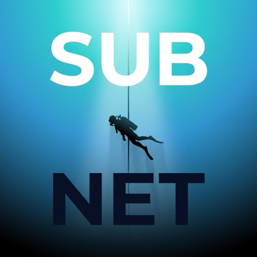

SUB NET

In fase di produzione
App desktop di PoweredbyG3R7 · "Problem solving."
Cos'è SUB NET
Applicazione desktop per la riproduzione di video in streaming, con interfaccia dedicata, strumenti di personalizzazione e sincronizzazione delle preferenze sul proprio Google Drive, per ritrovarle su ogni dispositivo.
Progetto indipendente sviluppato da PoweredbyG3R7. Utilizzando l'app accetti i Termini di servizio e la Privacy policy.
Perché SUB NET chiede l'accesso a Google Drive?
Esclusivamente per salvare un file di preferenze e impostazioni
(watchstate.json) nella propria area privata del Drive
(appDataFolder), così da ritrovarle su ogni dispositivo.
L'app non legge altri file del Drive e non invia dati a server esterni.